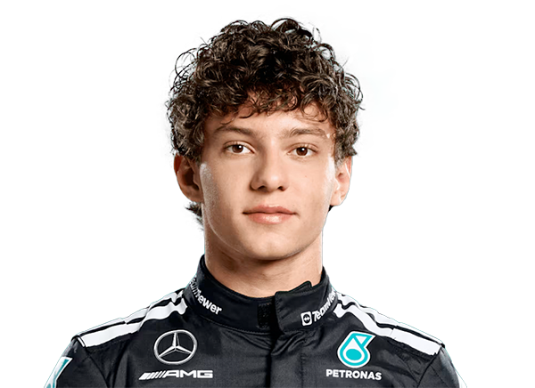

Equipo: Mercedes
Nacionalidad: Finlandés 🇫🇮
Edad: 22 años
Campeonatos: 0
Puntos 2025: 48
Kimi Antonelli es piloto finlandés de Mercedes. Conocido por su calma y consistencia, se destaca como joven talento en la Fórmula 1.
⬅ Volver a Clasificación